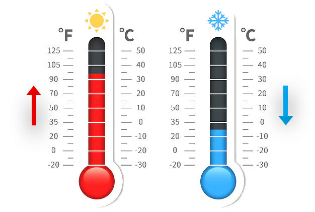
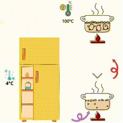

La variación de temperatura es el cambio en la energía térmica de un objeto o sistema, que se mide como un aumento o disminución en grados. Se representa comúnmente como ΔT .

Fórmulas de Variación de Temperatura
Fórmula para cuando la temperatura aumenta
∆T = Tf - Ti
Donde:
- ∆T: Variación de temperatura
- Tf: Temperatura final
- Ti: Temperatura inicial
Fórmula para cuando la temperatura disminuye
∆T = Ti - Tf
 Ejemplo
Ejemplo
Cocinar un huevo, con una temperatura inicial de 4°C y al cocinarlo tiene una temperatura final de 100°C.
